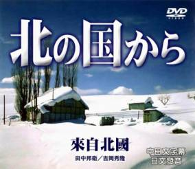

日劇：來自北國

倉本聰一起筆就是乾淨俐落。
這齣戲的一開始，馬上就是黑板五郎與妻子令子已經各奔東西。
令子在東京接受妹妹的指責，說她狠心不要小孩，
另一方面，五郎已經帶著小純小螢坐在往北海道的火車上了....
沒有夫妻吵吵鬧鬧、僵持不下的場面，沒有小孩兩邊為難、拖拖拉拉的情節，
這一刀切下來的黑板家生活斷面，乾脆犀利極了！
所有夫妻離異的原因、過程都在角色間的對話中交代地清清楚楚，
所有不必要的情節，全都一言帶過，完全不拖泥帶水，毫不黏膩！
這樣的編劇功力，看似生活化，卻是真正的厲害！
倉本聰這一系列的腳本可見得不是想到什麼寫什麼，
而是有非常細膩而完整的思考過整個架構才落筆的。
像這樣「回頭來看才發現別具意義」的對話或情節呼應，
在這一整個系列中隨處可見。
非常建議大家看完整齣戲後再重看一遍，
你（妳）就會發現這中間暗藏了太多這樣的密碼～～～